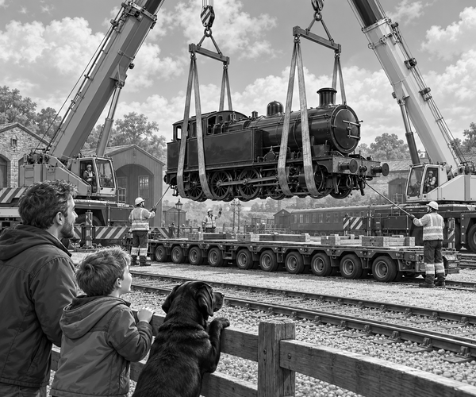

Little Comet was a small steam locomotive.
For many years, she had pulled trains on the valley railway.
Now her boiler needed a careful check.
The railway workshop could do the job.
But there was a problem.
The old valley line did not join the main railway.
Little Comet could not reach the workshop by rail.
She would have to travel by road.
Tom and Dad stood behind the yard fence.
Scout sat beside them.
His black tail swept the grass.
Driver Mia arrived in a huge silver truck.
Behind it came a long, low trailer.
The trailer had rows and rows of wheels.
“That is Little Comet's road train,” said Dad.
Two cranes rolled into the yard.
The crews placed wide, soft straps under the locomotive.
Everyone moved well away.
The crane hooks pulled together.
The straps tightened.
Slowly, Little Comet rose above the rails.
Tom stared.
He had never seen a train fly before.
The cranes swung the locomotive over the trailer.
Down she came.
Clunk.
Her wheels rested on strong wooden blocks.
The crew fitted heavy chains.
They checked every block and chain twice.
Heavy-haul fact: A long trailer may have many axles. They share the load so that one small part of the road does not carry all the weight.
Tom and Scout climbed into Dad's escort van.
Scout's travel harness clipped safely to his belt.
The convoy set off.
Dad's flashing lights warned other drivers.
Mia drove at walking speed through the village.
Then she reached the roundabout.
A stone wall stood on one side.
A lamp post stood on the other.
The truck could turn around.
But could the long trailer follow?
Mia steered wide.
The front wheels passed the stone wall.
The middle of the trailer crept around.
Its back wheels began to swing towards the lamp post.
Ben, the rear steerer, watched from his safe control seat.
He moved a small lever.
The trailer's back wheels turned.
They followed the round curve.
One metre clear.
Half a metre clear.
The final wheel rolled past the post.
“Little Comet made the bend!” cheered Tom.
Scout gave one happy bark.
Steering fact: Some extra-long trailers have steerable rear wheels. A trained operator can help the trailer follow tight bends.
The road climbed out of the village.
Mia kept the truck slow and steady.
At last, the workshop gates appeared.
The convoy rolled safely inside.
Soon two cranes lifted Little Comet back onto rails.
Her road run was complete.
Next time she moved, it would be with steam in her boiler.
But today, the locomotive had let a truck pull her.
1. What did Mia's trailer carry?
2. Why did the trailer have many axles?
3. What helped the trailer turn around the roundabout?